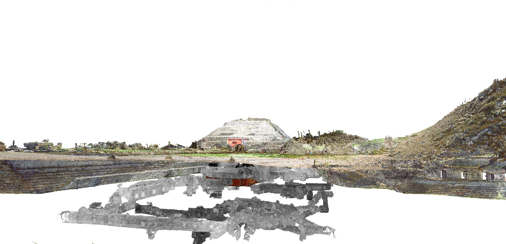
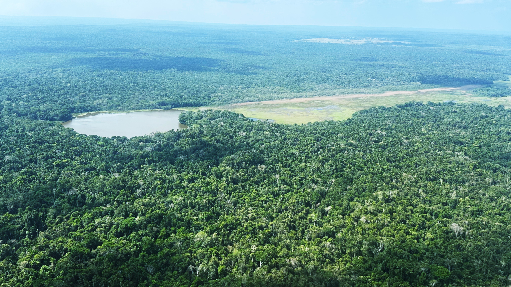
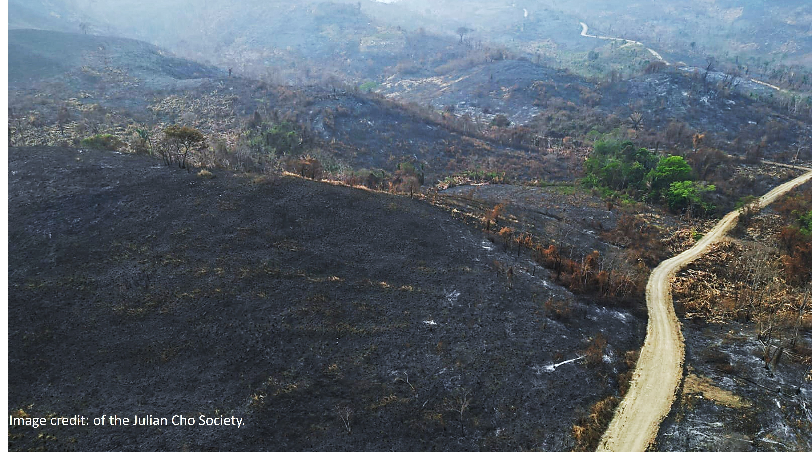

Research
Ancient Engineered Landscapes
I study reservoirs, canals, dams, terraces, plazas, causeways, settlement systems, and modified terrain as evidence for ancient landscape design focusing on chronology building. Current and future projects include Laguna Seca, the Booth’s River canal, GPR and volumetric fill modeling, and lidar-guided settlement analysis.

Environmental Legacies
This work reconstructs long-term environmental change through lake cores, wetland soils, sediment records, vegetation change, fire severity, and landscape degradation. Projects include Laguna Verde, Wamil in Belize, and at Dos Lagunas in Guatemala.

Digital Geospatial Heritage
I develop workflows for accessible and advanced digital documentation, including Drone mapping, airborne lidar, terrestrial laser scanning, photogrammetry, 3D printing, virtual reality, and digital restoration for heritage conservation, teaching, and public engagement.

Landscape Legacies
Future work will integrate drone lidar, TLS, hyperspectral and multispectral data, botanical surveys, soils, and ecological records to examine how past human activity shapes modern landscapes.
